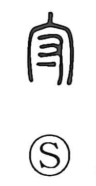

守

Uncategorized
Kun: mamoru, mori | On: shu, su
to protect ・ to guard
Explanation
This character combines 宀, the roofline of an ancestral shrine or other important building, with 寸. In bronze forms the lower part shifts into a hand (又) grasping a shield, so the whole graph pictures the act of defending a revered structure. Bronze inscriptions even record phrases such as “guarded together with the you-official (友官),” showing 守 as the concrete act of protection. From this image it broadened to the general sense of protecting and guarding.